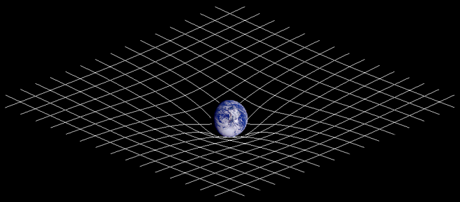
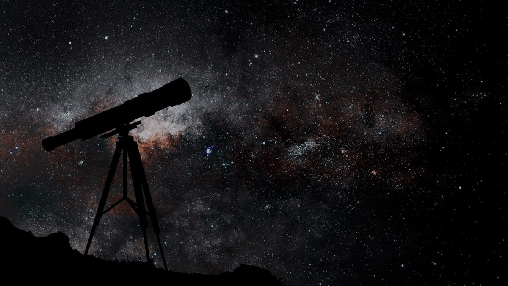
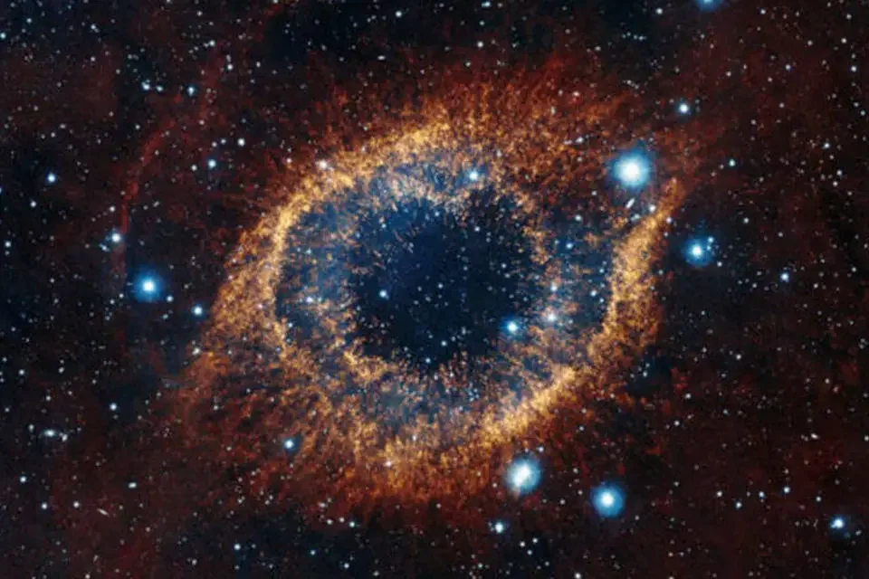

Conceito da Astrofísica
A Astrofísica é o ramo da física e da astronomia que estuda o universo através da aplicação das leis e conceitos da física, como a luminosidade, densidade, temperatura e composição química, de diversos objetos astronômicos como as estrelas, planetas, galáxias e o meio interestelar.

Principais Métodos da Astrofísica
Os principais métodos da astrofísica dividem-se em três pilares complementares que permitem investigar o universo, já que não é possível manipular os astros em laboratório:
Espectroscopia (Composição Química e Atmosferas)
- Como a Espectroscopia funciona: A luz solar refletida pela superfície ou pela atmosfera de um planeta é decomposta em um espectro. Cada elemento químico absorve ou emite luz em comprimentos de onda específicos.
- Exemplo: Através da espectroscopia infravermelha, a astrofísica identificou a presença de dióxido de carbono (CO2), dióxido de enxofre e nuvens de ácido sulfúrico na densa atmosfera de Vênus, além de detectar metano e gelo de água nas camadas superiores de Urano e Netuno.
Termodinâmica e Leis da Radiação (Temperaturas e Efeito Estufa)
- Como a Termodinâmica funciona: Mede-se a radiação térmica emitida e refletida pelo planeta para calcular balanços de energia e temperaturas de superfície.
- Exemplo: Embora Mercúrio esteja mais próximo do Sol, a aplicação da física de atmosferas e do efeito estufa explica por que Vênus é o planeta mais quente do Sistema Solar (com temperaturas superficiais próximas a 460 °C), retendo calor devido à sua espessa camada de gases.
Fotometria e Modelagem de Impactos (Superfícies e Crateras)
- Como a Fotometria funciona: Analisa-se como a superfície reflete a luz em diferentes ângulos e comprimentos de onda para estimar a rugosidade, a idade relativa do solo e a presença de gelo ou minerais.
- Exemplo: Em Mercúrio e na Lua, a contagem e a análise espectral de crateras de impacto permitem datar geologicamente as superfícies e entender o histórico de bombardeio de asteroides no início do Sistema Solar.
Outros Exemplos
- Física Gravitacional: A partir da massa do planeta e do seu raio, determina-se a densidade média do planeta.
- Magnetohidrodinâmica: Estuda o movimento de fluidos condutores no interior dos planetas para entender a geração de magnetosfera.
Astrofísica Teórica

Utiliza modelos matemáticos, equações da física (como a mecânica quântica, a termodinâmica, o eletromagnetismo e a relatividade geral de Einstein) para explicar os fenômenos observados e prever novos comportamentos no cosmos:
- A partir da massa do planeta e do seu raio, determina-se a densidade média do planeta.
- Estuda o movimento de fluidos condutores no interior dos planetas para entender a geração de magnetosfera.
Simulações Computacionais

Como substituto dos experimentos de laboratório, supercomputadores rodam simulações numéricas complexas para recriar eventos que levam milhões ou bilhões de anos para acontecer:
- Modelagem da formação de galáxias, colisão de aglomerados e o colapso gravitacional de nuvens de gás para gerar novos sistemas planetários (teoria nebular).